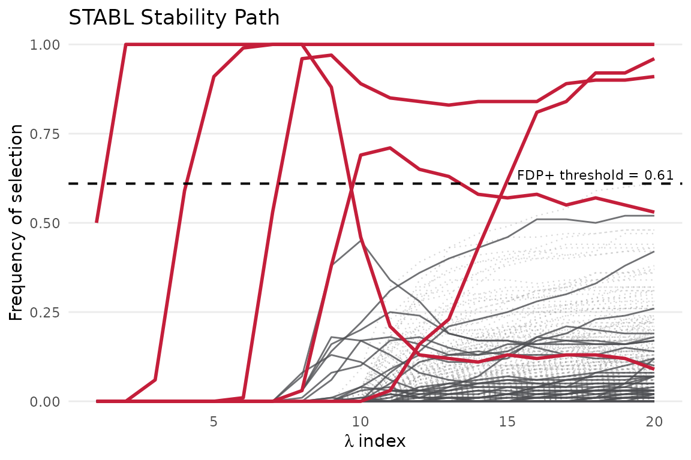
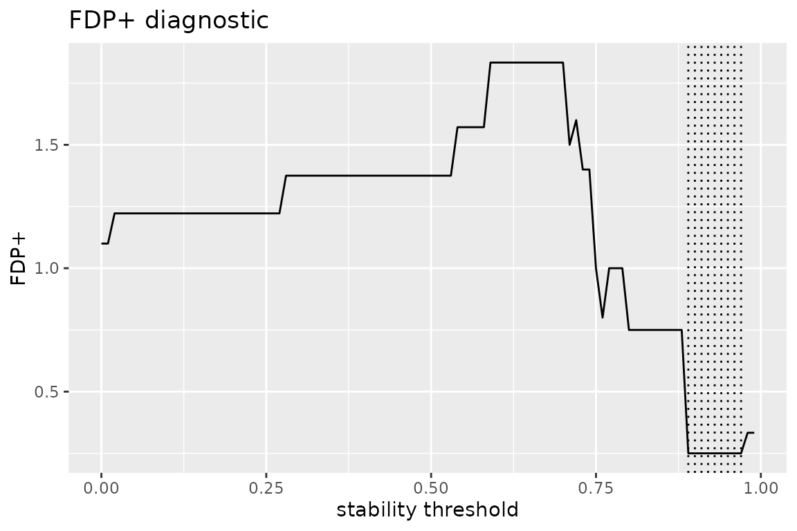
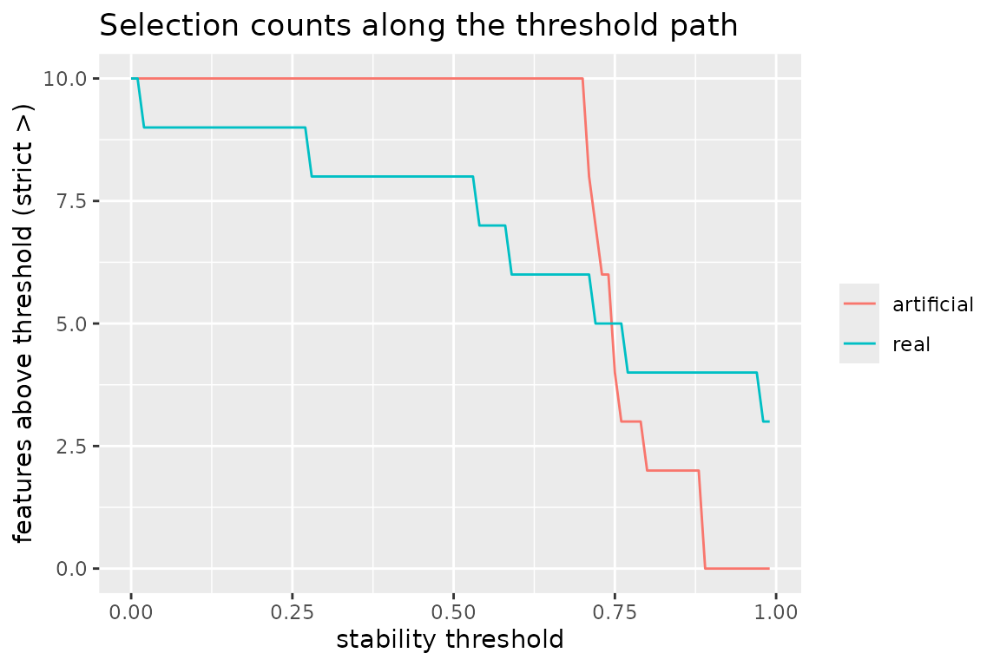
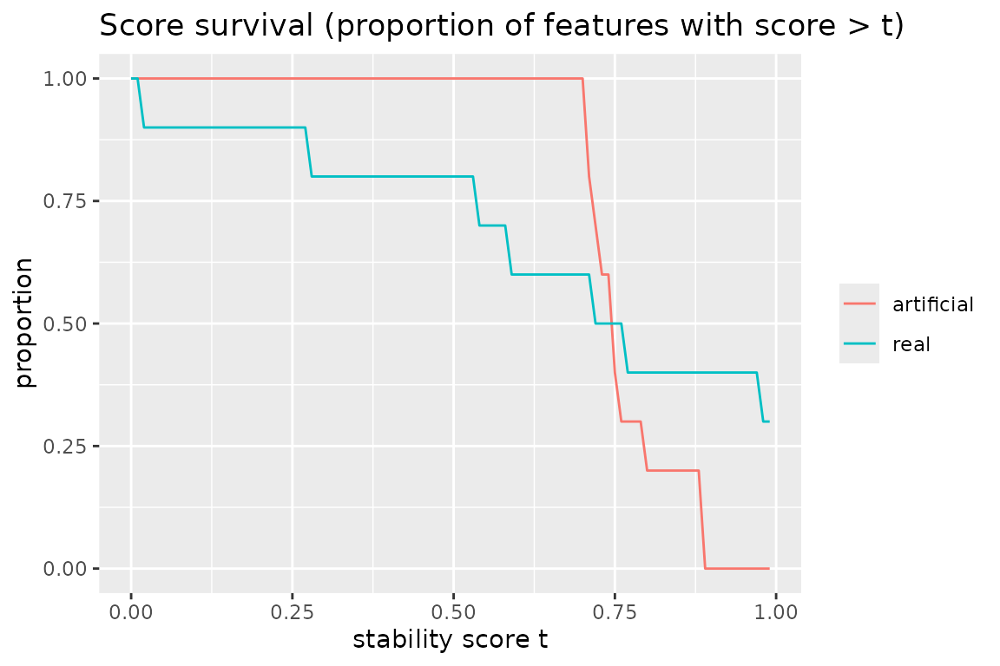

Single-cell latent factors: STABL on cEBMF-denoised expression
Source:vignettes/stablr-cebmf.Rmd
stablr-cebmf.RmdContents
- 1 Introduction
- 2 The upstream cEBMF fit (Python)
- 3 Loading the bundled fixture
- 4 A cell-identity outcome
- 5 Selection on the denoised matrix
- 6 Comparison with the raw-normalized matrix
- 7 Why not select on the factor scores directly?
- 8 Mapping selected genes back to factors
- 9 Reproducibility
1 Introduction
Covariate-moderated empirical Bayes matrix factorization (cEBMF; Denault et al., 2025, https://arxiv.org/abs/2505.11639) factorizes an expression matrix into a small number of latent factors whose priors can be modulated by side information, yielding a low-rank denoised representation of each cell. A natural downstream question is: which genes reliably carry a biological signal in that denoised representation? STABL answers exactly this kind of question — it couples a penalized learner with bootstrap resampling and an artificial-feature null to select only features whose association with the outcome is stable.
This vignette demonstrates the combination on the public 10x Genomics PBMC 3k data set (2,700 peripheral blood mononuclear cells, hg19):
- a cEBMF factorization of the expression matrix (run offline with the
Python package
cebmf_torch; the code is shown but not evaluated here), and -
stabl_fit()selection on the cEBMF-denoised expression matrix, compared with the same selection on the raw-normalized matrix.
The denoised matrix is a rank-10 reconstruction, so its 1,200 genes lie in a 10-dimensional subspace; Section 7 discusses what that implies for the selection machinery.
2 The upstream cEBMF fit (Python)
The bundled fixture was produced with cebmf_torch (https://github.com/william-denault/cebmf_torch), the
PyTorch implementation of cEBMF. The complete, seeded generation script
ships with the package source under
data-raw/prepare_pbmc3k_fixtures.py; the essential steps
are:
import torch
from cebmf_torch import cEBMF
# Y: cells x genes log-normalized matrix (CP10k + log1p), 1,200 HVGs
torch.manual_seed(20261020)
model = cEBMF(Y, K=10, prior_L="norm", prior_F="norm")
fit = model.fit(maxit=50)
L = fit.L # cells x K factor scores
F = fit.F # genes x K loadingsWith no covariate matrices (X_l, X_f)
supplied, cEBMF reduces to adaptive EBMF; the covariate-moderated priors
are drop-in and do not change anything about the downstream STABL
analysis. The run is CPU feasible (minutes for this matrix size).
3 Loading the bundled fixture
The fixture stores the factor scores L (2,700 cells x 10
factors), the gene loadings F (1,200 highly variable genes
x 10 factors), the raw HVG count matrix, and Louvain cluster labels
computed from the same matrix (see Section 9 for provenance):
library(stablr)
fixture_dir <- system.file("extdata", "pbmc3k", package = "stablr")
cebmf <- readRDS(file.path(fixture_dir, "pbmc3k_cebmf.rds"))
clusters <- readRDS(file.path(fixture_dir, "pbmc3k_clusters.rds"))
counts <- readRDS(file.path(fixture_dir, "pbmc3k_counts_hvg.rds"))
dim(cebmf$L)
#> [1] 2700 10
table(clusters)
#> clusters
#> c1 c2 c3 c4 c5 c6 c7 c8 c9
#> 355 335 545 499 150 157 591 57 11Cluster c9 contains only 11 cells — too few for
stability resampling (half-sample bootstrap resamples would leave ~5
observations, and glmnet warns below 8). We drop it and say so:
keep <- clusters != "c9"
clusters <- droplevels(clusters[keep])
counts <- counts[keep, ]
L <- cebmf$L[keep, ]
min(table(clusters))
#> [1] 574 A cell-identity outcome
The Louvain clusters map cleanly onto canonical PBMC lineages;
cluster c2 is the B-cell cluster (mean counts of
MS4A1/CD79A are an order of magnitude higher than in any other cluster).
We use a binomial one-vs-rest outcome — B cell vs other — as the
selection target:
5 Selection on the denoised matrix
The cEBMF-denoised expression of each cell is the reconstruction
L %*% t(F). To keep the vignette fast we work with the 500
most variable of the 1,200 fixture genes (variance computed on the
log-normalized raw matrix, applied identically to both
representations):
lib <- Matrix::rowSums(counts)
xn <- log1p(1e4 * counts / lib) # CP10k + log1p
v <- Matrix::colSums(xn^2) / nrow(xn) - (Matrix::colSums(xn) / nrow(xn))^2
top <- order(v, decreasing = TRUE)[1:500]
denoised <- L %*% t(cebmf$F)
colnames(denoised) <- rownames(cebmf$F)
fit_denoised <- stabl_fit(
x = denoised[, top], y = y, family = "binomial",
lambda_grid = "auto", n_bootstraps = 100L, n_lambda = 20L,
random_state = 42L
)
get_feature_names(fit_denoised)
#> [1] "ANXA1" "CD79B" "CD79A" "C9orf16" "GIMAP1"
plot_stabl_path(fit_denoised)
The selection is sparse and marker-focused: CD79A and CD79B are the two chains of the B-cell receptor signaling complex — the defining B-cell-identity module.
6 Comparison with the raw-normalized matrix
The same fit on the raw-normalized values of the same genes:
fit_raw <- stabl_fit(
x = as.matrix(xn[, top]), y = y, family = "binomial",
lambda_grid = "auto", n_bootstraps = 100L, n_lambda = 20L,
random_state = 42L
)
sel_raw <- get_feature_names(fit_raw)
sel_denoised <- get_feature_names(fit_denoised)
length(sel_raw)
#> [1] 47
intersect(sel_raw, sel_denoised)
#> [1] "ANXA1" "CD79B" "CD79A"The raw-matrix selection is much broader. It contains genuine B-cell genes (the MHC class II genes HLA-DRA/HLA-DPA1 and CD74 are expressed in B cells as antigen-presenting cells) alongside correlated bystanders that the resampling null cannot quite separate at this sample size. The denoised selection concentrates on the receptor module itself. Neither is “wrong” — they answer slightly different questions — but the comparison illustrates what matrix denoising buys a stability selection: a tighter, more mechanistically focused panel.
7 Why not select on the factor scores directly?
A tempting alternative is to run STABL on the 10 factor scores
themselves. The factors are strongly associated with the clusters
(per-factor stability scores reach 0.97-1.0), but the FDP+ calibration
behind stabl_fit() is built for high-dimensional feature
sets: with only 10 real and 10 artificial features, one artificial
feature crossing a high stability threshold swings the FDP+ estimate by
~0.1, and the calibrated threshold becomes seed-sensitive:
fit_factors <- stabl_fit(
x = L, y = y, family = "binomial",
lambda_grid = "auto", n_bootstraps = 200L, random_state = 42L
)
get_feature_names(fit_factors)
#> [1] "cEBMF2" "cEBMF3" "cEBMF4" "cEBMF5"stabl_diagnose() makes the coarseness visible — the FDP+
curve over the threshold path is a step function with very few
attainable values:
diag_factors <- stabl_diagnose(fit_factors)
plot(diag_factors)


This is a property of the error-control machinery at tiny
p, not of cEBMF or of the data. Rule of thumb: use STABL’s
FDP+ calibration when the feature space is large (its design regime),
and read small-p stability scores as a ranking rather than
an error-controlled selection.
8 Mapping selected genes back to factors
The loadings matrix F connects the two views: each
selected gene’s row of F shows which latent factors it
loads on. For the B-cell receptor genes the dominant loading is the
factor that itself separates cluster c2:
round(cebmf$F[intersect(sel_denoised, rownames(cebmf$F)), ], 2)
#> cEBMF1 cEBMF2 cEBMF3 cEBMF4 cEBMF5 cEBMF6 cEBMF7 cEBMF8 cEBMF9 cEBMF10
#> ANXA1 -0.03 -0.02 -0.07 0.05 -0.06 0.04 0.07 0.12 -0.05 0.00
#> CD79B -0.01 0.01 0.11 -0.16 0.01 -0.06 0.01 -0.02 0.00 0.00
#> CD79A -0.01 0.01 0.13 -0.16 0.01 0.03 0.00 -0.02 0.00 0.00
#> C9orf16 -0.02 0.00 -0.02 0.00 -0.01 0.01 0.00 0.01 0.00 -0.06
#> GIMAP1 -0.02 0.00 -0.03 0.04 0.00 0.00 0.00 0.00 0.00 0.009 Reproducibility
The fixtures are real tool outputs, regenerated end to end by
data-raw/prepare_pbmc3k_fixtures.py (download, HVG
selection, Louvain clustering, cEBMF fit; all steps seeded) and
data-raw/prepare_pbmc3k_fixtures.R (fixture assembly).
Provenance and SHA-256 checksums ship in
inst/extdata/pbmc3k/run_metadata.json and
inst/extdata/pbmc3k/SHA256SUMS. The cluster labels are
computational (Louvain) labels used as a demonstration outcome, not
curated cell types; selections on a single donor’s cells demonstrate
feature-selection mechanics, not population-level biomarker
inference.